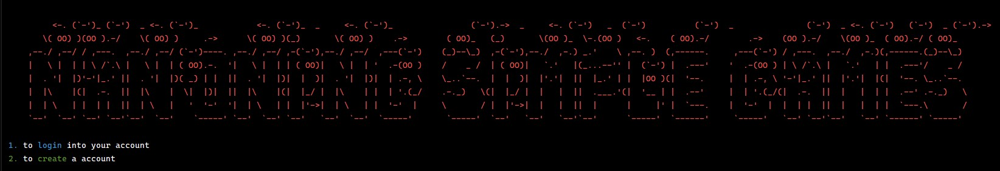
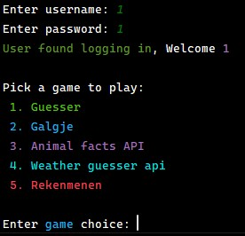
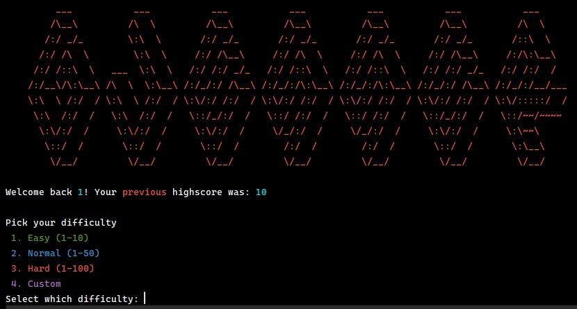
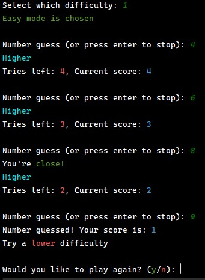
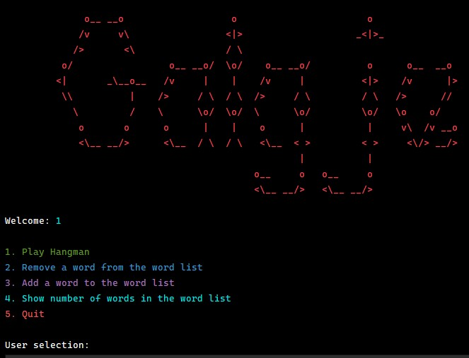
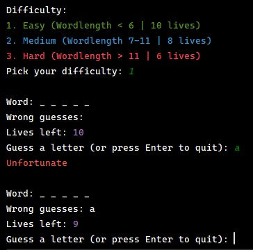

Een eerstejaars project voor de Hogeschool Utrecht. Een Python-gebaseerd platform voor mini-games, inclusief user management, scoresystemen en API-integraties.

Nan is een modulaire command-line applicatie die verschillende mini-games host, waaronder:

Tijdens dit project heb ik de fundamenten van Python verder uitgediept. Ik heb geleerd hoe ik externe API's (zoals OpenWeather en OpenTDB) integreer, hoe ik een modulair systeem bouw met verschillende Python-bestanden, en hoe ik complexe game-logica combineer met persistente dataopslag in JSON.
In het Guesser spel moet de speler een getal raden binnen een bepaald bereik. Het spel geeft feedback of het getal hoger of lager is.


Het systeem bevat een uitgebreid account-beheer dat niet alleen inlogs valideert, maar ook high-scores bijhoudt voor de verschillende games.
def user_account_handler(user_name, user_password):
file_path = "account.json"
with open(file_path, 'r+') as json_file:
data = json.load(json_file)
accounts = data["accountDetails"]
for user_account in accounts:
if user_account["username"] == user_name and user_account["password"] == user_password:
print(f"User found logging in, Welcome {user_name}")
return True
print("User not found creating account")
new_entry = {"username": user_name, "password": user_password}
accounts.append(new_entry)
json_file.seek(0)
json.dump(data, json_file, indent=2)
json_file.truncate()
In Galgje wordt de voortgang visueel bijgehouden en kunnen gebruikers de woordenlijst dynamisch aanpassen door woorden toe te voegen of te verwijderen.


def show_progress(word, guessed_letters):
display = []
for letter in word:
if letter in guessed_letters:
display.append(letter.upper())
else:
display.append("_")
return " ".join(display)
def calculate_score(lives_left, difficulty):
return lives_left * difficulty
Voor de Animal Facts quiz wordt de requests library gebruikt om vragen op te halen van een externe API. Dit introduceerde concepten zoals JSON parsing en HTTP status codes.
import requests
def start_api_animal(user_name):
response = requests.get("https://opentdb.com/api.php?amount=10&category=27&type=boolean")
data = response.json()
questions = data.get("results", [])
for item in questions:
question_text = html.unescape(item["question"])
correct_answer = item["correct_answer"]
user_answer = input(f"{question_text} (True/False): ")
# ... logic to check answer and update score